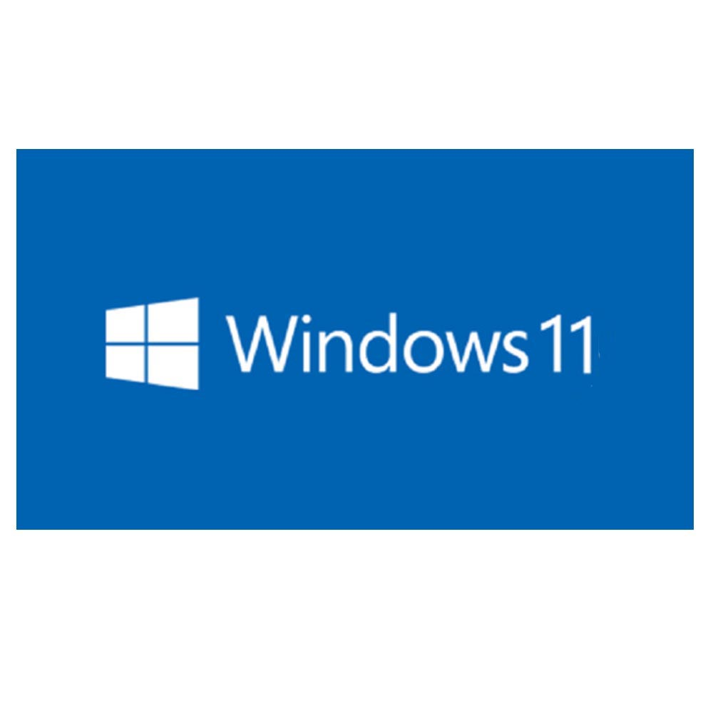
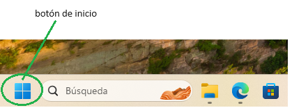
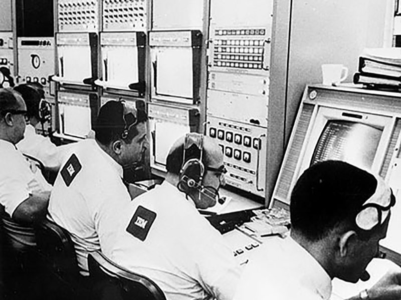
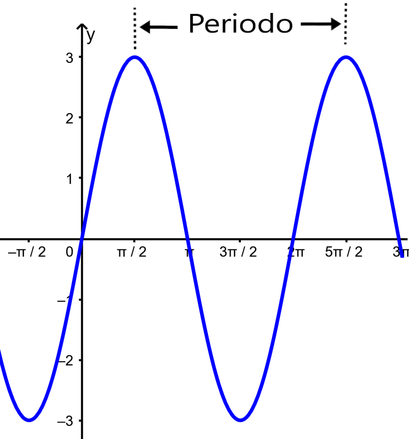
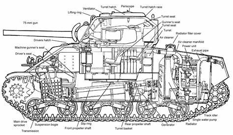
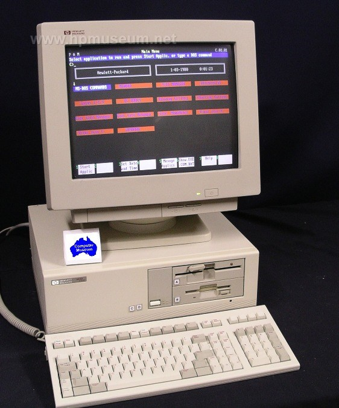
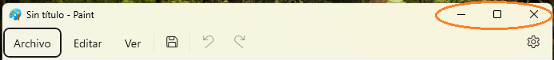
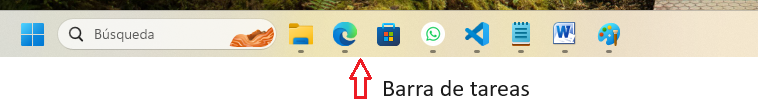
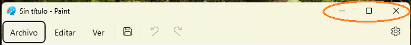
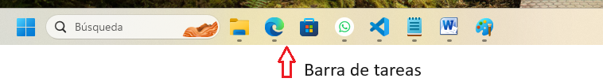

WINDOWS
De todas formas, estamos en el año 2024 y ya no tenemos que preocuparnos por esos trámites, desde 1995 Windows pasó a ser un sistema operativo en toda regla y nos compete ahora conocer su entorno. Actualmente existe Windows 11 y la interfaz, aunque diferente y mejorada, tiene más o menos las mismas funcionalidades.
Comenzamos desde el principio, el botón de inicio, en todos los casos está señalado con el icono de windows, y despliega una ventana con los programas o utilidades que contiene.
Entonces, después de todo lo aprendido, ¿sabemos realmente para qué sirve un ordenador? ¿Gastamos ese montón de dinero por un aparato que sólo nos muestra cuatro ventanas o un paisaje bonito? no, en realidad el computador es una herramienta muy útil si se la usa de forma correcta, de ninguna forma nos servirá para preparar el almuerzo, o llevar a los niños al cole. Pero definitivamente lleva registros y hace cálculos como ninguna otra.
Fíjense que las primeras máquinas, enormes, pesadas y difíciles de manejar y configurar, costaron una fortuna a universidades e instituciones como la Nasa o el ejército sólo para hacer cálculos, pero imaginen la inmensidad de los cálculos que realizaban, que podían trazar la trayectoria de un cohete para poder determinar con precisión casi exacta las coordenadas de llegada, o también funciones trigonométricas, problemas de dinámica de fluídos, cálculos balísticos y otros cálculos de ingeniería que requerían precisión y donde los humanios hubieran tardado demasiado tiempo.
Pero los empresarios vieron más allá, y pensaron en los comerciantes, los empresarios, las industrias, y fabricaron aparatos más pequeños, compactos y adaptados a esos clientes. Y para esos años de 1990, pusieron la vista en el resto de la población, pensando que en el futuro, pudiera estar una computadora en manos de cada persona que pudiera comprar una y hacerla pensar que sin ella, la existencia sería muy hostil.
Así que sí, sirve para casi todo, si puede programarse para eso. Así que comencemos por abrir y cerrar programas. Un computador nuevo tiene instalados algunos programas interesantes, un editor de texto, donde podemos escribir datos sobre nuestro negocio, por ejemplo, una calculadora, claro, algunos juegos, un calendario, un explorador de archivos para movernos entre carpetas, una grabadora de sonido, un reproductor de música, una herramienta de dibujo (auque dibujar con el ratón no sea lo más fácil del mundo) y, quizas la aplicación más importannte y utilizada de todas: un navegador de internet.
Abrir y cerrar un programa
Tan sencillo como ubicar el icono del programa y hacer doble click sobre él, esperamos a que nos muestre su interfaz y exploramos lo que podemos hacer con él, luego, en la parte superior derecha, hay tres botones: un guión, un cuadrado y una equis. El primero minimiza la ventana, ubicándola en la parte inferior, donde hay una barra de tareas, justo donde se encuentra también el botón de inicio. El cuadrado maximiza la ventana para que ocupe la totalidad de la pantalla; tocarlo de nuevo permite al usuario darle dimensiones personales posicionando el cursor del ratón sobre ellos hasta que tomen forma de doble flecha.
con él, luego, en la parte superior derecha, hay tres botones: un guión, un cuadrado y una equis. El primero minimiza la ventana, ubicándola en la parte inferior, donde hay una barra de tareas, justo donde se encuentra también el botón de inicio. El cuadrado maximiza la ventana para que ocupe la totalidad de la pantalla; tocarlo de nuevo permite al usuario darle dimensiones personales posicionando el cursor del ratón sobre ellos hasta que tomen forma de doble flecha.
Y el boton de equis, bueno, cerrará el programa, preguntando, en caso necesario, si el usuario está seguro o si desea guardar los cambios en caso de no haberlo hecho.
- Block de notas: Un editor de texto simple, crea archivos con extensión .txt por defecto
- Calculadora
- Caledario
- Cámara
- Configuración: Permite ajustar el ambiente a las necesidades del usuario
- Correo
- Exploración de archivos: Muestra un a ventana desde la que se puede acceder a todas las demás carpetas y archivos, incluyendo las del sistema.
- Grabadora de sonido
- Navegador de internet
- Paint: Permite al usuario realizar dibujos a mano alzada
- Reloj
- Reproductor de música
- Juegos
- Terminal: Símbolo del sistema, para los que aún usan C:\>
Algunos programas instalados en la mayoría de paquetes de Windows
Practiquemos un poco:
Las primeras computadoras fueron diseñadas para el público en general
Seleccione la respuesta correcta: